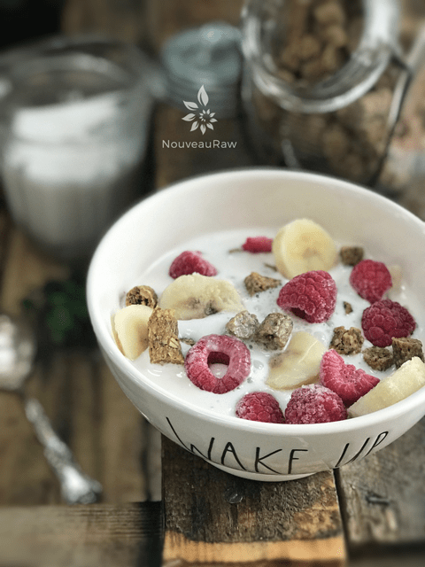
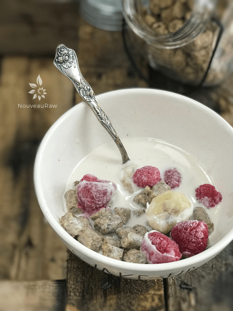
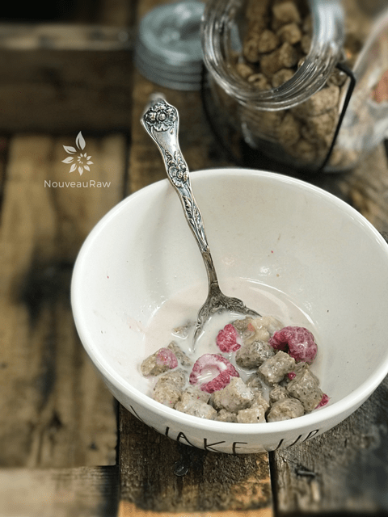
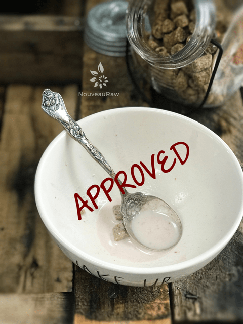

Granola Crunch’Ola Cereal

~ raw, vegan, gluten-free ~
This cereal actually came from a granola bar recipe that I had previously created. Part of the batter was used to make cereal so I thought that I would give it its own write up for those of you who may not venture over to that category and are looking for a raw cereal recipe.
Serial Cereal Eater
That was me growing up… a serial cereal eater. Never met a cereal that I didn’t like. Everything in between All Bran to Fruity Pebbles.
Did you know that there is a place in London called The Cereal Killer Cafe? I am not advocating their choice of cereals… but I find it fascinating that such a place even exists. They sell over 120 different types of cereal from around the world, along with 30 different varieties of milk and 20 different toppings.
There is a multitude of ways to substitute ingredients in this recipe, so feel free to adjust it to cater to your taste buds and health needs. When I made it, I had almonds on hand that had already been soaked and dehydrated. If you don’t have these already made up in your kitchen, you can always just use soaked almonds.
There are a few ways create small-bite-sized cereal. For the first technique, it is just a matter of spreading the batter about 1/4″ thick on a non-stick sheet that comes with the dehydrator. Square up the edges and then score into small bite-sized pieces. Remember, keep them bite-size, so they won’t be hard on your mouth. The second way is to pipe the batter out in long rows like ropes. Once dried, cut into small bite-size pieces. So basically, you end up with little squares or circles.
If you are pressed for time, you could just drop the batter onto the sheet in small clumps, dry and then break up further if needed. Then enjoyed as a real granola cereal. Nothing here needs to be complicated… just fun. This recipe doesn’t have a really strong flavor… oatier. Therefore it makes for a fantastic base to many many different toppings. Such as dried fruits or fresh fruits. Enjoy!
- 3 cups (344 g) gluten-free, rolled oats, soaked & rinsed
- 2/3 cup ( 121 g) prunes, rehydrated in 2/3 cup (150 g) hot water
- 3/4 cups (177 g) almond or peanut butter
- 1/4-1/2 cup (75 g – 150g g) maple syrup
- 1/4 cup (50 g) coconut oil, melted
- 1 tsp (5 g) vanilla extract
- 1 tsp (2 g) ground Ceylon cinnamon
- 1/4 tsp (2 g) Himalayan pink salt
- 1 cup (225 g) raw almonds, soaked & dehydrated
- 1/2 cup (88 g) hemp hearts (seeds)
- 1/2 cup (87 g)chia seeds
- 1/4 cup (32 g ) golden flaxseeds, ground
Preparation:
Prep work oats & prunes:
- After the oats are done soaking, rinse the living-day-lights out of them.
- Pour them into a large stainless steel mesh strainer, and put under the faucet. As the water is running through the oats, agitate them with your hand. This will speed up the rinsing process.
- Hand squeeze the excess water from the oats and set aside.
- Place the prunes in 2/3 cup of hot water in and soak till soft.
- This will help soften them for blending purposes.
Making the batter:
- In a food processor, fitted with an “S” blade, pour the prunes, soak water, sweetener, coconut oil, vanilla, cinnamon, and salt. Process until creamy.
- I have a 12 cup food processor, so if your’s is smaller, you may need to do this in batches.
- Add the drained oats, nut butter, Process until well mixed. Remove the lid, scrape down the sides of the bowl.
- Add the almonds, hemp hearts, chia seeds, and flax seeds. Process until everything is broken down and is similar to wet paste-like texture.
- Let the mixture sit for 15 minutes (if needed.)
- This will give the flax and chia seeds time to activate and thicken the mixture.
- It depends on how much liquid was left in your hand-squeeze oats.
Square shape:
- Spread the batter about 1/4″ thick, out on the non-stick sheets that come with the dehydrator.
- e batter will very thick and sticky. I found it helpful to wet my offset spatula every now and then.
- Score into bite-sized pieces.
- I love using my 6 wheel pastry cutter. You can adjust it to make tiny cereal squares or crackers. If you use this today to make your cereal squares, set the size you want, dip it in hot water between each pass and hold it upright as you quickly roll from one end to the other.
- Dehydrate at 145 degrees (F) for 1 hour, then reduce to 115 degrees and dry for up to 24 hours.
- Why 145 degrees? Click (here) to read why?
- Halfway through the dry time, remove the granola from the non-stick sheet and place it directly on the mesh sheet. This will allow the air to move around both sides freely.
- Once dry, break into the small pieces and store in an airtight container. Suggestion: make large batches and freeze portions of it. This creates wonderful raw staples in the kitchen for quick breakfast and snack ideas.
Circular shape:
- To create circular shapes, you will need a pastry bag and a 1/2″ circular piping tip.
- Place the tip snug into the bag.
- Slide the bag, tip first, into a quart-sized mason jar and fold the edges of the bag over the mouth of the jar, creating a collar.
- With your free hand, using a spoon, long spatula, fill the bag,
- Don’t overfill the bag. If you do the batter might ooze out the other end, or it might be too much for your hands to handle.
- Before twisting the bag shut, work out any air bubbles. Twist the bag tight.
- Any air encountered during piping will result in a little explosion of filling and disrupt your long stick.
- It is good to do this step every time you fill the bag and/or when you have problems piping.
- Hold the tip of the bag at a 45-degree angle and with firm but gentle pressure, squeeze the batter out, onto the mesh sheet that comes with the dehydrator.
- As the batter comes out, slowly move your hand down the length of the tray, making long sticks. Repeat till the batter is used up.
- Dehydrate at 145 degrees (F) for 1 hour, then reduce to 115 degrees (F) and continue to dry for up to 24 hours.
- Once dry, lay about 4 ropes beside one another and then slice them into small bite-sized discs.
- Store in an airtight container.
- Enjoy alone or with an awesome nut milk!
The Institute of Culinary Ingredients™
- To learn more about maple syrup by clicking (here).
- Why do I specify Ceylon cinnamon? Click (here) to learn why.
- What is Himalayan pink salt and does it really matter? Click (here) to read more about it.
- Learn how to make your own raw almond butter by clicking (here).
- Are oats gluten-free? Yes, read more about that (here).
- Are oats raw? Yes, they can be found. Click (here) to learn more.
- Do I need to soak and dehydrate oats? Not required but recommended. Click (here) to see why.
- Learn how to grind your own flaxseeds for ultimate freshness and nutrition. Click (here).
Culinary Explanations:
- Why do I start the dehydrator at 145 degrees (F)? Click (here) to learn the reason behind this.
- When working with fresh ingredients, it is important to taste test as you build a recipe. Learn why (here).
- Don’t own a dehydrator? Learn how to use your oven (here). I do however truly believe that it is a worthwhile investment. Click (here) to learn what I use.
NRFDA
(Nouveau Raw Food Determining Association) conducted a test at
Nouveau Raw Kitchens, The Soggy Cereal Test.
The subject: Cinnamon Almond Butter Cereal.
Object: to see how long this raw cereal could stand up to almond milk before getting soggy.
No animals were harmed in this test.
Results posted below.
-
-
Fresh squeezed almond milk was added to the cereal.
-

-
The timer has been set for 10 minutes…
-

-
I enjoyed a few bites and found the cereal very crunchy… timer set again for 10 minutes….
-

-
As you can see, I enjoyed more bites… still crunchy.
This test concludes that it is …

© AmieSue.com